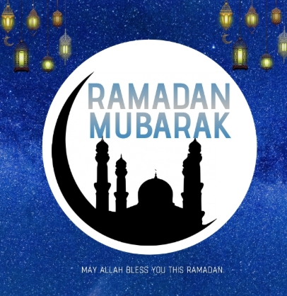
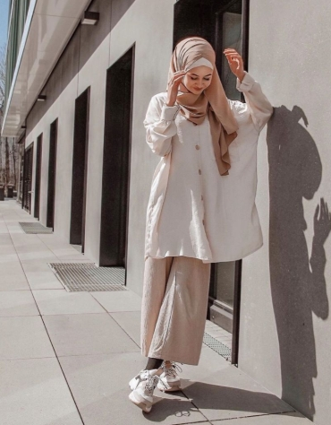
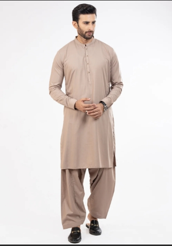
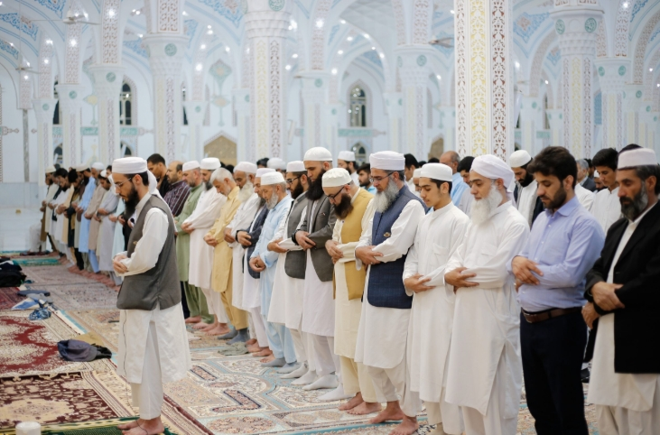

Ramadan

Drag the scroll bar to learn about Ramadan!
Ramadan is the ninth month of the Muslim
calendar and is considered a holy month
of fasting. It begins and ends with the
appearance of the crescent moon. Fasting
during Ramadan is one of the five pillars of
Islam and is a way for believers to show
their thanks to God and reflect on the
teachings of the Quran. Muslims often
give chariety more often, attend taravee
that are prayers at night, fast from
sunrise to sunset, pray 5 times each
day and read the Quran more often.
Ramadan usually lasts for about 29
to 30 days and Muslims celebrate Eid Al-Fitr
after the last day of Ramadan.
Ramadan is the ninth month of the Muslim
calendar and is considered a holy month
of fasting. It begins and ends with the
appearance of the crescent moon. Fasting
during Ramadan is one of the five pillars of
Islam and is a way for believers to show
their thanks to God and reflect on the
teachings of the Quran. Muslims often
give chariety more often, attend taravee
that are prayers at night, fast from
sunrise to sunset, pray 5 times each
day and read the Quran more often.
Ramadan usually lasts for about 29
to 30 days and Muslims celebrate Eid Al-Fitr
after the last day of Ramadan.
Casual Clothes


Drag the scroll bar to learn about casual clothing!
The temperature is usually humid
and hot during the whole year in Saudi
Arabia, so it has been recommended to
not wear multiple layers of clothing. Also,
Muslims in Saudi Arabia dress modestly, so
they usually wear clothes that are oversized
instead of clothes that cling to the
contour of your body. Men and women are
required to cover as much skin as possible.
T-shirts are acceptable when the sleeves
are below your elbow, and women are not
allowed to wear shorts, but men can wear
shorts that cover their knees.
Prayers

Drag the scroll bar to learn about prayers!
When praying, Muslims pray towards
the direction of the Qibla which
is where the kaaba is located.
Muslims pray 5 times a day and
the prayers are called Fajr, zuhr,
Asr, Maghrib, and lastly Isha.
Salat al-fajr is prayed at dawn
or at any time before sunrise.
Salat al-zuhr is prayed during
the middle of the day. Salat
al-’asr is prayed during the
afternoon and salat al-maghrib
is prayed after sunset.
Lastly, salat al-’isha is
prayed between the time from
sunset to midnight.